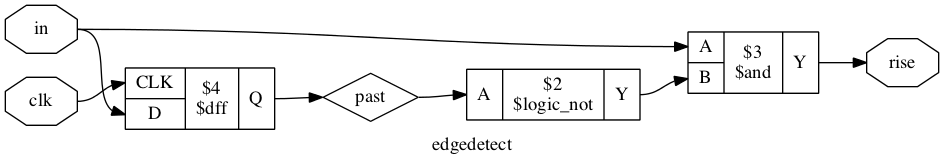
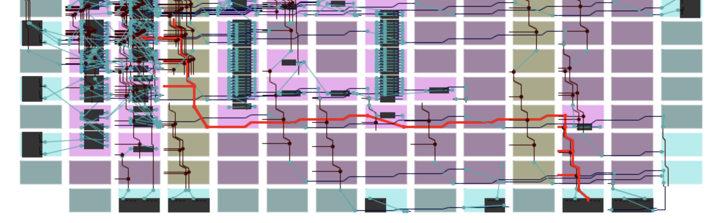
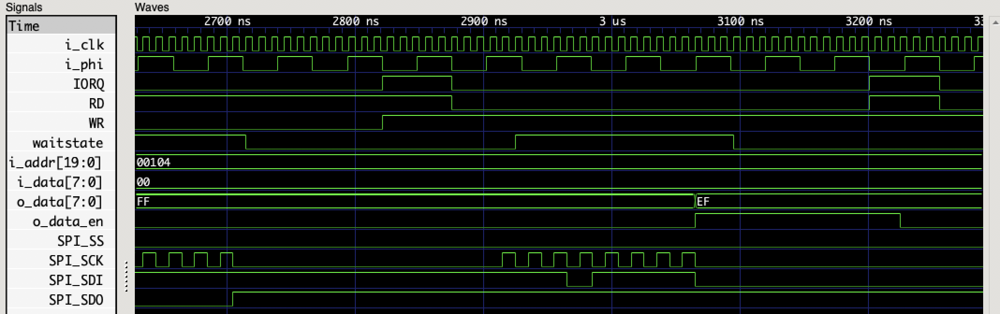

There are many things on the virtual TODO list for the TRS-20. But topping them out has to be the final task required to have the board become self-sufficient: making the FPGA capable of burning itself a new bitstream to its SPI Flash ROM.
As I mentioned in my last post, I’m not in this project to do absolutely everything for myself. Where there’s existing code, I’ll happily use it - unless I think I’ve got something to learn or fun to have. This bit of work is both learning and fun (or perhaps both) so I’m going to author my own SPI master in Verilog. But that’s not what this post is about.
Instead, this post talks about the process of building, testing, and understanding Verilog code, from the perspective of a novice to the field.
Getting started with an FPGA
My FPGA is an iCE40HX1K. I chose this particular part for a few reasons. Crucially, it’s available in a TQFP-100 package, which is right at the very extreme edge of my ability to solder. It’s large enough to do interesting things with, supports 3.3V I/O, and can be clocked at speeds much higher than I’m likely to try to clock it. And just as importantly as being able to solder it to a PCB, it is supported by an open source toolchain that I can fit into my usual sort of workflows.
An FPGA is more or less a grid of cells, with each cell consisting of a look-up table (LUT) and a D flip-flop (DFF) and routing to connect the cells to each other and to the I/O pins. Almost every aspect of this is controlled by SRAM inside the IC, which in turn is programmed using a bitstream loaded from the SPI Flash.
FPGAs are also known for having pretty horrendously bad vendor software. This is especially true if you’re a Mac user, since no-one seems to support Macs natively. The downloads are huge (if there’s even free tools in the first place) and they’re not always compatible with using git to manage changes. I tried to persevere with Quartus for Altera CPLDs and entry-level FPGAs for a little while, but it just wasn’t a good experience.
Enter Project Icestorm. This is a project that documented the bitstream format of the iCE40 family of FPGAs, and created tools to synthesise, route, and program the ICs from Verilog source. The tools work in the way I’m used to toolchains working: read file in, do stuff, write file out. No IDE, no graphical integrated design tool, just source files in text, intermediate files in various formats, and a binary at the end of it all.
All of this settled the matter. I didn’t really need an FPGA on the TRS-20 and in fact it runs just fine with the FPGA sitting there totally inert. Its main functional role is as an interrupt controller: nothing else is wired to the interrupt lines of the processor, and I didn’t want to try making a controller out of discrete logic ICs. I did really want to play with an FPGA, though, so that’s exactly what I’m going to do.
The basics - building a bitstream
I like Make. I’ve used it for decades. It’s far from a perfect tool, and despite having used it for decades it’s in the pile of tools that I wouldn’t be able to use in any non-trivial way if Google were ever offline. But for this sort of task, it’s pretty much perfect. The build process with Project Icestorm takes three steps, each time loading some file(s) from disk and writing further file(s) out to disk.
Synthesise the design using yosys
This step takes in one or more Verilog source files and translates it into the building blocks of an FPGA - LUTs, DFFs, I/O ports, and other special cells. The banner image for this post is a little bit of a graph representation of the synthesised design. Here’s an entire component from the design.

A rising edge detector compares the past state of the signal to its current state
The synchronous statement always@(posedge clk) past <= in; establishes that each rising edge of the clock signal will load the input into the past register, while the continuous statement assign rise = in &!past; passes the input and the past state through a combinatorial logic circuit. The end result is that at the rising edge of the clock signal rise will be high only when the in signal was low on the last clock edge but is high on the current edge.
The full image for my relatively tiny design is almost unreadably complex. I could see how it may be occasionally useful to trace a particular path with an aim of simplifying the logic involved, but I have not yet done this.
Place the cells and route connections with nextpnr
The synthesised design output by yosys contains all the cells used by the design and the map of how they must be connected. The next stage in getting the design onto silicon is to determine where each cell of the design will lie on the chip and how the routing between them will be arranged. The cells on an FPGA cannot be connected entirely arbitrarily, so the choices of where to place cells and how to connect them become non-trivial. Finding an optimal placement is NP-complete: nextpnr uses simulated annealing to find an approximately optimal solution.

The lower half of an iCE40 with my design placed and routed.
The image here shows part of the design after packing, placing, and routing has been done. It’s produced by an ICE40 floorplan/layout viewer. The path highlighted in red is the SPI_SDI$SB_IO_IN net - it connects the SPI_SDI I/O buffer in the bottom right to the logic that latches values on the appropriate SPI clock edge.
Pack the chip configuration data into a bitstream
The icepack tool takes the output of nextpnr and produces a bitstream image. These are always exactly 32,220 bytes in length - and it turns out, they always have a Y-modem CRC of E2B5. This might seem foreboding, like something terrible happens because I comically mix up two images. But no, it’s just a thing - the bitstream format has a CCITT 16-bit CRC checksum in it, the E2B5 is the checksum of the headers and footers. I suppose a different CRC might arise if I used a different combination of options and got a different header.
I also use icemulti at this stage to produce a multi-image bitstream, with four images. This allows the cold boot pins on the CPU board to select one of the images at boot, and the use of the SB_WARMBOOT special cell to reboot into one of them under software control. All four images I packed in were identical for flashing to the ROM: I want the right structure in place to be able to flash a single image into the ROM via the FPGA. I also align all images to 32k boundaries, so I can just erase one 32k sector. The way I’ve set it up places the first image at 0x000a0 with the preceding 160 bytes being the multi-image header. Re-flashing the first image requires that this header is prepended.
Testing a hardware design
For an extremely simple design like my original “proof-of-concept” LED flasher I can be pretty confident that it’s likely to work first go. As I get more complex I’d like to have more certainty that I’ve got it right than just trusting that I would never make a mistaek.
I frequently see mentions of “testbenches” when doing Google queries like “verilog getting started” and “verilog it doesn’t work help help help”. I’m still not sure what the term means - but it’s an approach for writing an additional Verilog module that provides test inputs to the module under test. In these testbench modules one can use Verilog constructs that have no meaning when synthesised for hardware, such as delaying a specific time period.
I didn’t do any of this.
Instead, I used a tool called Verilator. This compiles your synthesisable Verilog into C++. Armed with this I wrote a test harness (in C++, I feel so dirty) to validate my design against a fairly simple little script emulating CPU signals for a series of in and out instructions. I also wrote a very basic emulation of an SPI Flash ROM, barely enough to test the timing on the SPI lines.
This not only helped me catch a bunch of errors, it also helped me quickly validate changes as I went.
It also supports writing out a waveform file that can be viewed with a VCD reader like GTKWave.

The SPI slave responds to a read request with 0xEF
Between the test harness and the waveform, I got my SPI code into what looked like good shape pretty quickly.
An emulator is an approximation
But of course, it did not work properly once it hit hardware. Part of the problem is that the FPGA puts the flash IC into power down state once its done, so the only thing it will respond to is a wake-up command, but my code was instead trying to send the manufacturer ID command. Once I fixed that up - it still didn’t work properly. But it was clear it was transmitting properly, because it woke up and responded to the manufacturer ID command. The response was shifted by one bit. This is a pretty common error in SPI implementations - it’s indicative of a clocking fault.
The SPI chip is rated up to 133MHz for all instructions except Read Data, which is rated up to 50MHz. I didn’t exactly design this part of the board with high clock speeds in mind: I know it’s good at 40MHz, which is the speed the FPGA reads from it. My design only pushes it at 50MHz, by toggling the SPI_CLK line high and low on each rising edge of the 100MHz global clock.
There’s useful information given by nextpnr when it lays out your design for the IC: timing approximations for critical paths. One of my critical paths is the asynchronous inputs feeding into the 100MHz clock domain - it takes up to 7.3ns for D2 to meander through a handful of cells before reaching the input of a flip-flop clocked in that domain. Another is the time it takes for a signal to go from the output of a flip-flop in the 100MHz domain to the SPI_SS output pin - this is 4.6ns, most of which is just the time it takes for the signal to traverse the various routing components involved in going from one side of the FPGA to the other.
4.6ns is the slowest such signal, which means that both SPI_SCK and SPI_SDI take less time than that. At 50MHz there’s 10ns available from the falling edge when the SPI flash will shift to the rising edge when the FPGA will latch. In theory there shouldn’t be a timing problem. The ROM’s datasheet says it’s at most 6ns after the falling edge of the clock signal before output data is valid - it’s possible it just takes more than 10ns for data to be stabilised and routed. Unlikely, but possible.
I slowed the SPI clock down to 25MHz, and lo! it worked.
However, it also occurred to me that I was latching input when the output clock signal was low but about to go high. This “rising edge” was clear and sharp on the inside of the FPGA, but of course it takes time for that signal to reach the edge of the device and from there get out to the ROM. Likewise, the falling edge takes time to be seen. I switched over to latching the input on the same clock edge that I lower SCK and shift data - this takes into account the delays for signals to move into and out of the FPGA. I think this is how people with experience in this space do it… but I did it myself to learn stuff, like how to see the accumulated delays for paths through the FPGA.
With the clock back up to 50MHz, I tried again… and to my giggly glee, it still worked.
Faster and faster
Moving to 100Mhz would be a little tricky: I could possibly just assign SPI_SCK = CLK; and basically wire the 100MHz clock directly to the master clock. When I look at how others are doing it, I see tricks like using DDR cells to toggle the SPI clock on rising and falling edges, with an enable signal to shut it off.
It’s also not really necessary. I added wait state generation - you can see the waitstate signal in the waveform above. One thing to note about wait state generation on the TRS-20 is that it passes through a DFF IC, clocked by the rising edge of PHI. This IC has its own setup time that means the FPGA shouldn’t change /WAIT arbitrarily: it needs to change at least 3ns before PHI rises. I approach this with a rising edge detector on PHI - this is stabilised to CLK and could be up to 20ns behind the real rising edge, which is still ~30ns before the next one.
However, for an I/O operation the CPU will sample /WAIT on the falling edge of the first wait state. The DFF in the way means I need to assert /WAIT before the rising edge of that wait state. Having enough time to guarantee detection of it is implausible with my current approach.
/IORQ and /RD will fall up to 25ns after the falling edge of T1. I’ll detect them up to 20ns after that - 45ns after the falling edge of T1. T2 will have risen by then, and could rise even before /IORQ and /RD have both fallen. To catch the read request I could insert an additional cycle on the PHI edge detect so that always comes after the read request control signals. But /WR falls up to 25ns after the rising edge of T2, and I won’t detect it until 45ns later. The rising edge of Tw shouldn’t come sooner than 54ns later. That’s only 6ns left to assert /WAIT, which is pushing up pretty hard against the FPGA’s output delays - and assumes any input delays don’t wind up adding one clock cycle to the stabilisers. Which they will.
A second edition of my CPU board might fix this with something like removing the DFF for /WAIT - the setup time for the signal is 15ns before PHI falls. That would give me a bit longer to get /WAIT in order, probably long enough to solve the problem. Another option that’s appealing is to synchronise the clocks - run the CPU at 20Mhz and use a PLL to run the FPGA at 100Mhz with a shared edge. The HX1K doesn’t have a PLL in the VQFP-100 package though, so I’d also have to go to the HX4K in the TQFP-144 package or pay a hefty fee to get a fab house to solder a BGA package on for me. I can’t divide the 100MHz clock down to drive the CPU, because the CPU runs its own clock generator, and I’ve no idea how well synchronised the PHI output is to the EXTAL input.
For now I’ll just accept the need to have a minimum of one wait state configured on the CPU for I/O.
Another way to get faster results is to use dual I/O mode. I didn’t wire up enough pins to use quad I/O mode, so dual is my limit, but it would give me an effective 100MHz data rate. Doing so requires that the FPGA understands the SPI command set - it needs to know to change outputs to inputs at the right time to avoid frying pins on either FPGA or ROM. Because frying the FPGA’s SPI pins would be such a big ol’ pile of suck I’ve got it actively preventing the dual and quad I/O commands right now. I don’t need it fast as much as I need it not to ruin the part that took me three attempts to solder properly.
The CPU board is done
The last change to push the clock back up to 50Mhz did not involve removing the flash ROM to reprogram it. Instead, I programmed it at 25MHz. The CPU board is now wholly self-sufficient: I have CP/M commands that will reprogram the ROMs for both the CPU and the FPGA.
The TRS-20 now needs non-volatile file storage. I could probably do something with the excess capacity of the FPGA’s ROM, there’s 3.8Mb to be had. This would involve doing deblocking in the CP/M BIOS and being cautious not to write to it willy-nilly because I’d have no load wearing. Better to look at connecting up an SD card - but whether I choose to design a second revision of the board with the SD card on it or go to a daughter board is still not certain.
Since writing the bulk of this post I went on to update my FPGA code to support an SD card on external pins. I wound up making my SPI driver asynchronous to the bus: a write begins an SPI exchange, a read returns the value latched from the last exchange (and, optionally, begins another). At 25MHz or higher this happens faster than the CPU can read I/O and write RAM. For both the SD card (at 25MHz) and the Flash ROM (at 50MHz) this gives me bulk reads using inir - but to support this I had to give up my 16-bit I/O addressing and live within 8 bits instead. Replacing the genuine CP/M 2.2 with ZSDOS and ZCPR1 (from CP/Mish) is next on my to-do list, including supporting deblocking and an SD card disk driver.